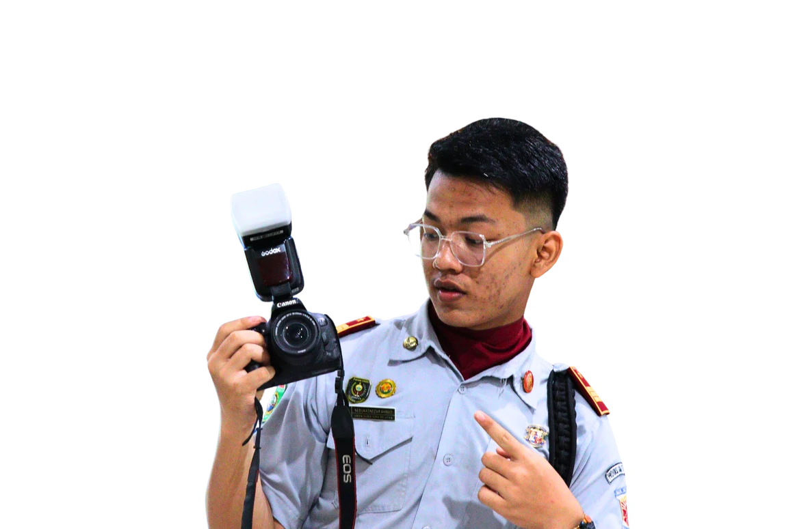
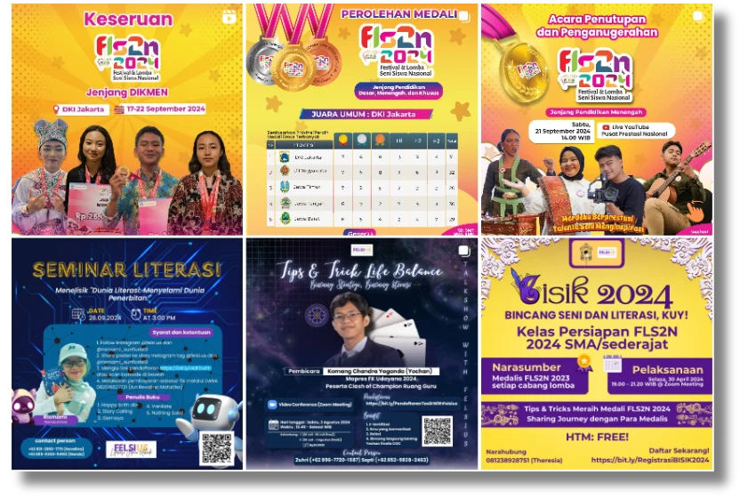
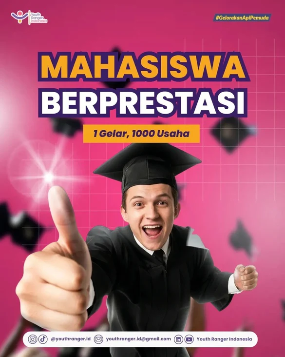
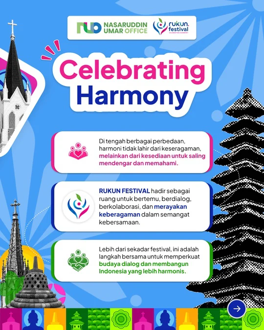
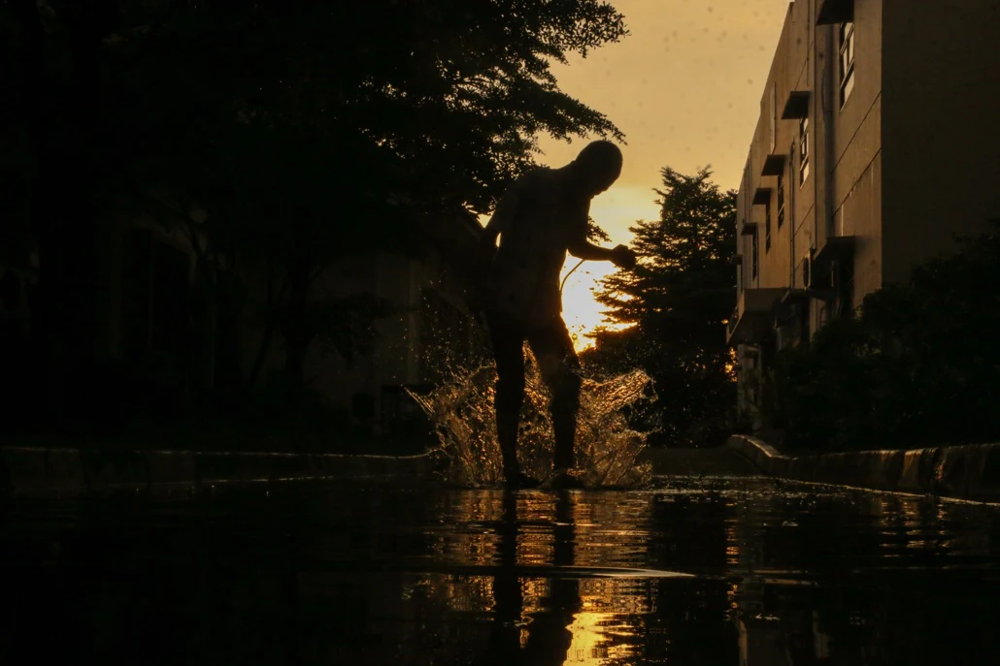
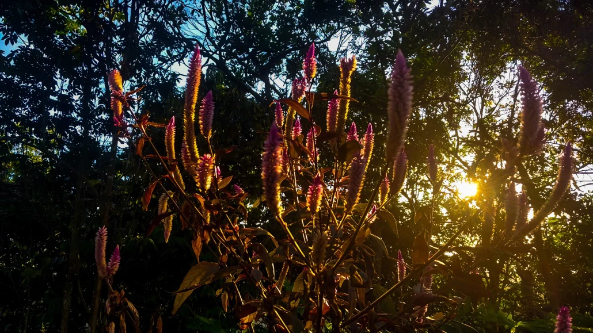
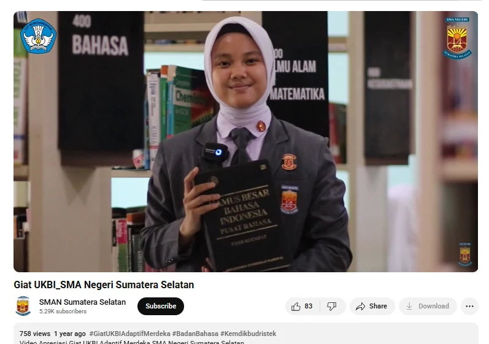
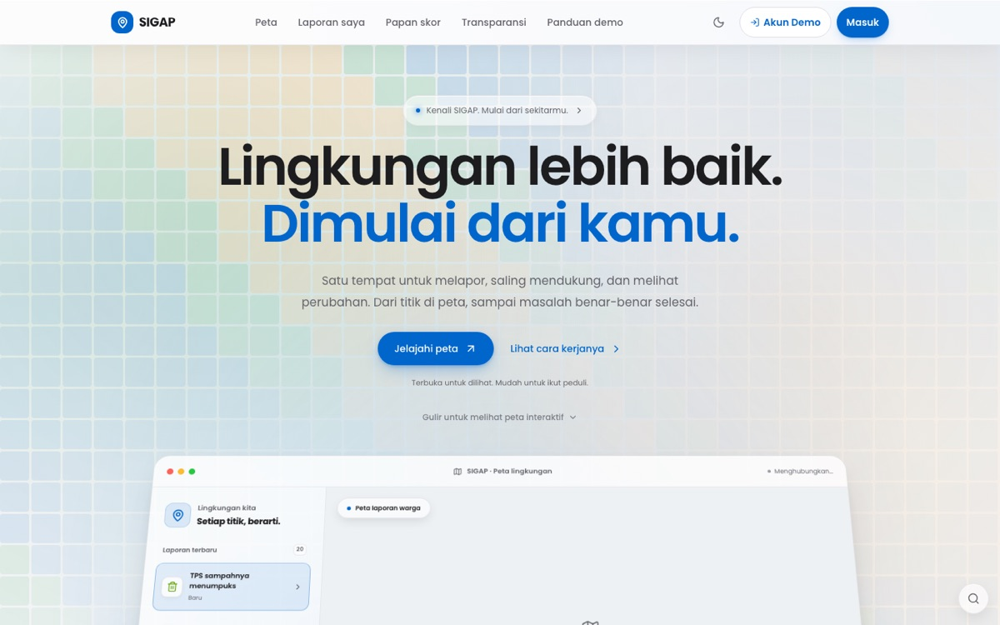

Juni – Agustus 2025
Content Creator & Social Manager
V-Kool Indonesia · Palembang Outlet
Merancang strategi konten sesuai identitas brand pusat, meraih 100.000+ interaksi Instagram, dan berkolaborasi dengan V-Kool Indonesia Pusat.
Halo, saya Nezar
Creative Leader & Digital Strategist
Mahasiswa Teknik Informatika yang senang mempertemukan teknologi dan kreativitas. Saya merancang visual, bercerita melalui konten, dan memimpin tim untuk menghadirkan dampak yang berarti.

Tentang saya
Saya tertarik pada teknologi, fotografi, videografi, dan desain grafis. Bagi saya, karya yang baik bukan hanya menarik secara visual, tetapi juga mampu menyampaikan pesan dan memberi manfaat bagi orang lain.
Melalui pengalaman di organisasi nasional, komunitas, dan industri, saya mengembangkan strategi media sosial, mengelola identitas visual, serta berkolaborasi dengan tim lintas divisi. Kini, saya mendalami Teknik Informatika di Institut Teknologi PLN untuk memperluas cara saya berkarya.
Buka portofolio lengkapPengalaman
Perjalanan di dunia kreatif,
media sosial, dan kepemimpinan.
Juni – Agustus 2025
V-Kool Indonesia · Palembang Outlet
Merancang strategi konten sesuai identitas brand pusat, meraih 100.000+ interaksi Instagram, dan berkolaborasi dengan V-Kool Indonesia Pusat.
Juni – Agustus 2025
Solar Gard Palembang
Mengelola produksi konten dan mendukung pelayanan pelanggan. Meningkatkan interaksi Instagram lebih dari 90% serta mendukung peningkatan penjualan.
Juni – Agustus 2025
Pratama Variasi Palembang
Mengembangkan identitas visual dan kampanye digital tertarget, dengan 100.000+ interaksi Instagram dalam kurang dari dua minggu.
Aktif · Nasional
Youth Ranger Indonesia
Memimpin 30 anggota tim kreatif, mengarahkan identitas visual, dan mengembangkan strategi konten yang mencapai 5 juta+ tayangan dalam dua bulan.
Januari – Desember 2024
Forum Edukasi Literasi Siswa Indonesia
Memimpin 11 anggota tim media, meraih 500.000+ interaksi Instagram, dan berkolaborasi dalam konten bersama Pusat Prestasi Nasional.
Desember 2023 – Desember 2024
Youth Ranger Indonesia · Sumatera Selatan
Mengembangkan akun dari awal hingga 700+ pengikut dan mendukung pelaksanaan YRI EXPO X YRI FEST dengan 1.000+ peserta.
Juli 2024 – Sekarang
Komunitas Pemuda Penggiat HAM Sumatera Selatan. Berkolaborasi dengan Kementerian Hukum dan HAM serta tim lintas divisi untuk edukasi HAM.
Juli 2024 – Juli 2025
Forum OSIS Sumatera Selatan. Mengelola dokumentasi, desain, dan publikasi kegiatan, termasuk LDBI tingkat provinsi.
Januari 2024 – Januari 2025
OSIS SMA Negeri Sumatera Selatan. Meraih 500.000+ interaksi serta mengembangkan Instagram dan TikTok resmi sekolah.
2023 – 2024
Chief of Information and Technology Rohis (2023–2024) dan Social Media Division Dewan Ambalan Penegak (2024) SMA Negeri Sumatera Selatan.
Juni 2026
Merancang visual branding, feeds Instagram, merchandise, serta dokumentasi dan video live report untuk festival oleh NUO.
Juni 2026
Menyusun guidebook, mengelola operasional live streaming, serta mendokumentasikan kegiatan untuk publikasi dan arsip resmi.
Pendidikan
September 2025 – Sekarang
Institut Teknologi PLN · Jakarta
Beasiswa penuh KIP Kuliah dan mahasiswa Program Ikatan Kerja PLN Group.
Juni 2022 – Mei 2025
Palembang
Beasiswa penuh selama tiga tahun dari Pemerintah Provinsi Sumatera Selatan.
Keahlian
Bahasa Indonesia · Native
Bahasa Inggris · Advanced
Portofolio pilihan

Social media & desain grafis
Visual publikasi untuk kegiatan literasi, webinar, dan kolaborasi pendidikan nasional.

Creative direction & konten
Identitas visual dan konten organisasi yang mengangkat prestasi serta semangat pemuda.

Branding acara & publikasi
Materi komunikasi visual yang menyatukan informasi acara dan identitas festival.

Fotografi
Merekam detail sehari-hari melalui komposisi, refleksi, dan cahaya alami.

Fotografi dokumenter
Menangkap suasana kegiatan dan interaksi manusia melalui cerita visual.

Videografi & editing
Produksi video dan dokumentasi untuk menyampaikan pesan serta mengabadikan kegiatan.
Aplikasi yang menghubungkan pedagang keliling dan warga melalui peta serta Titik Kumpul.
Portal informasi dan layanan warga untuk pengumuman, agenda, UMKM, dan pelaporan.
Platform aspirasi dan pelaporan yang mendukung partisipasi warga.

Website layanan perjalanan umroh dengan informasi paket, layanan, dan konsultasi.
Sistem presensi berbasis web untuk membantu pencatatan kehadiran.
Prestasi pilihan
Scientific Paper Competition & Video Campaign Competition · Pertamina HSE Training Center
Terpilih sebagai Campus Ambassador OPPO Indonesia
Unika Atma Jaya · Sustainable Development Through Technology
Institut Teknologi PLN · Periode satu tahun
HUT ke-50 TVRI Sumatera Selatan · “SEMU SAMACARA”
Kontak
Punya ide, proyek, atau kesempatan kolaborasi? Saya senang mendengar cerita Anda.